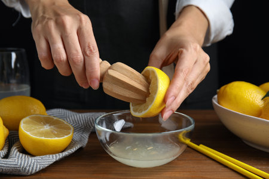
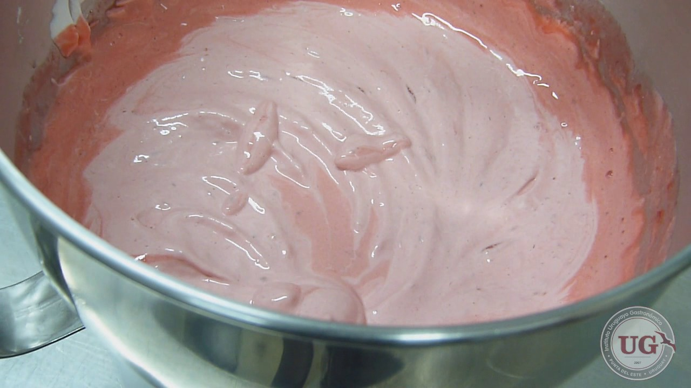
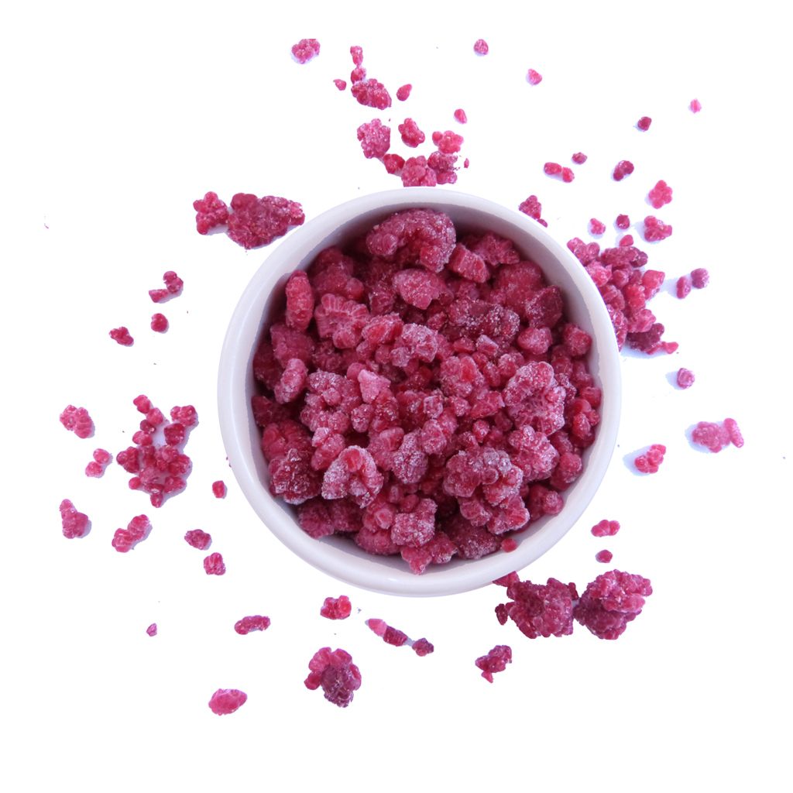
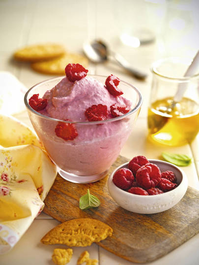

Para 4 personas:
Coloca los 200g de frambuesas sin descongelar en el vaso de la batidora. Exprime el limón, cuela el zumo obtenido y añádelo. Pon en la mezcla también los 3 yogures, las 4 cucharadas de miel y las 4 galletas, previamente troceadas, y fritura unos 5 minutos, hasta que quede una preparación cremosa.
Coloca la crema en una fuente de paredes bajas, mejor si es metálica, y cúbrela con una hoja de film transparente. Introdúcela en el congelador y déjala reposar 30 minutos. Sácala y remuévela con un tenedor para romper los cristales de hielo que se hayan formado. Tápala de nuevo y vuelve a congelarla 30 minutos.
Retira el helado, remuévelo y repártelo en recipientes de cristal. Decora con los 80g de frambuesas lavadas y partidas por la mitad.
Este postre es también muy rápido de hacer, aunque tendrás que dejar que repose media hora primero y otra media después. Por lo demás, es sencillísimo de preparar.
